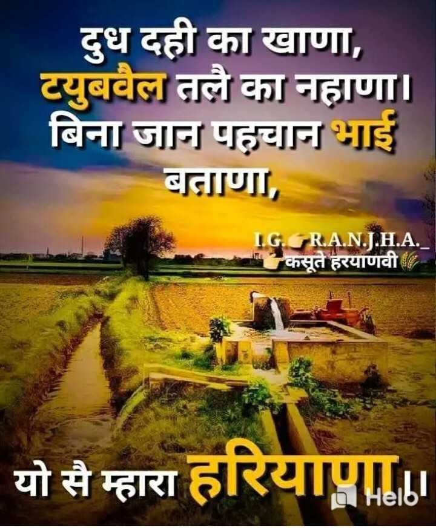
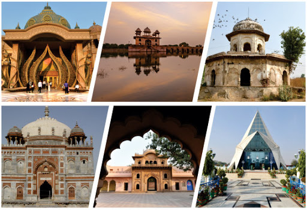

About HaryanaDating back to 4,500 years the people of the Harappan civilization were the first to occupy the land of Haryana. Later the Aryans from Central Asia started to migrate from there and started settling down in places like Punjab and Haryana because of the mighty river and its tributaries in this area of the Indian subcontinent. Thus the current population of the people Haryana has their ethnic origin to the Aryan race. This is clearly proved by the external features of the people who are tall with sharp features and wheatish colour.Though they are quite aggressive in nature they are very good at heart. The people are bound by a common interest which is their liking for milk and milk products which is an essential part of their diet.Costume
The costumes of the people of Haryana are very simple and contribute a lot to their culture. The status of the family is judged by their costumes. Men usually dress up themselves with dhoti, shirt, turban and a pair of shoes. The style of the turban varies for a Jat, an Ahir, a Rajput, a Bania or a Brahman. They are always found being wrapped by a blanket or chaddar. Costumes vary for the women folk especially for those of different communities. A Jat woman's costume consists of a ghaggri (a long skirt), shirt and a printed orhni which has long cloth used to drape the front area of her body. The Ahir women are characterized by their lehenga or petticoat tight blouse and orhni which are ususally red or yellow in colour and decorated with bosses and fringes. The costume of a Rajput woman is very much similar to that of an Ahir woman where the only difference lies in her orhni which is plain white with silver fringe but without a fall. The Brahmans and Aggarwal women go in for the normal dhotis and saris. |
 |
Customs & TraditionsMost of the people of Haryana have more or less equal social status. The status factor comes up only with the age which is understood and respected. The elders no matter how poor or rich is given all the due respect in any place whereas the younger as a part of their social custom has to respect the older people even if the junior is very rich or socially placed in a high status. Thus the tradition of the state of Haryana is very socialistic in nature. When it comes to marriage, a boy and a girl of the same gotra are not allowed to marry and the marriage is a must within the same community. A boy and a girl of the same gothra are considered to be brother and sister. If marriages do not take place within the same Jat then it is considered as a great disgrace to the boy or the girl family and is never accepted. Marriage within the same village is also not permitted even if the boy and girl qualify for marriage according to gotra restriction. By following this custom the people are able to maintain racial purity and this factor of limiting within the community helps in promoting good health and prevention of physical degeneration. The people of Haryana do not promote karewa or widow marriage which is a very big obligation among the community.CuisineThe people of Haryana give lot of importance to milk and curd for it is one of the richest places in cattle population. Obviously the cuisine of Haryana has lot of dairy products and more of vegetarians. Rice and Roti are most commonly eaten by the people of Haryana. The rotis are usually made either with wheat, barley, and gram flour. Some special varieties of rotis made in this region include Besan Masala Roti and Bajra Aloo Roti. Curd, lassi, buttermilk, and sherbet are part of everyday Haryana food. Side dishes made of channa, cottage cheese, and spices commonly known as Kadai hara cholia is a very popular side dish for rotis. Steamed rice is served with Kadhi which is made with gram flour, onion, potato, curd, and spices. Parathas are eaten with a dish called bathua raita made with bathua, curd, and spices. Kichri, the porridge made from bajra, moong dal, or rice, is a nutritious evening meal of the rural people.OccupationAgriculture is the main occupation of the people of Haryana where they are involved in the cultivation of rice, wheat, jowar, bajra, maize, barley, pulses, sugarcane, cotton, oil seeds and potato. The world famous basmati rice is from Haryana. Nearly 70 % of the total population of people living here are into farming. Dairy farming is also an essential part of the people of Haryana. Now industrialization is also expanding at very fast rate in the city for its proximity to Delhi. |
 |